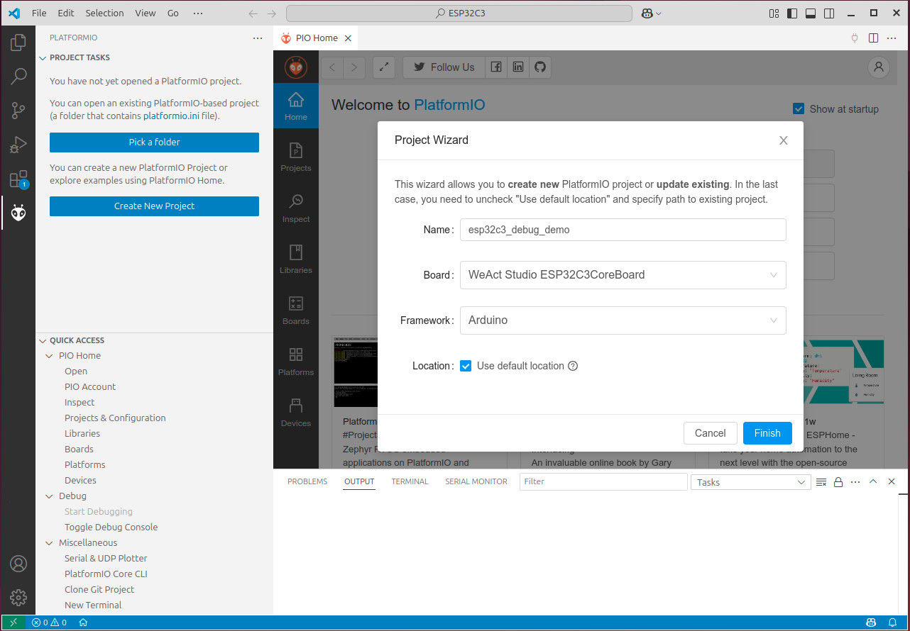
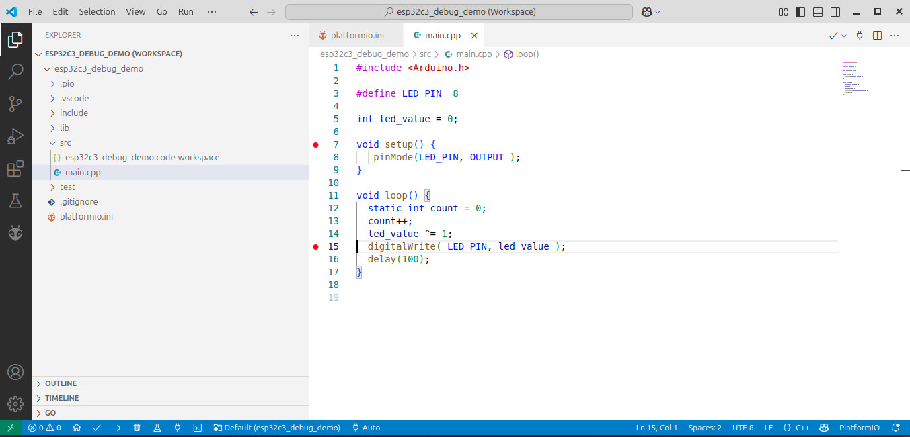
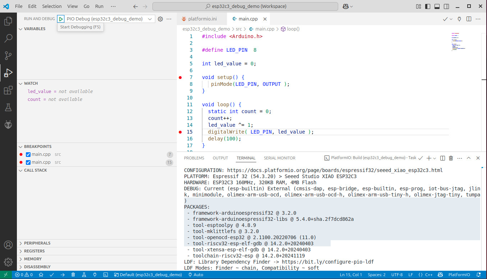
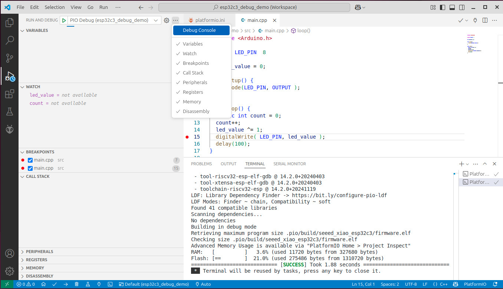
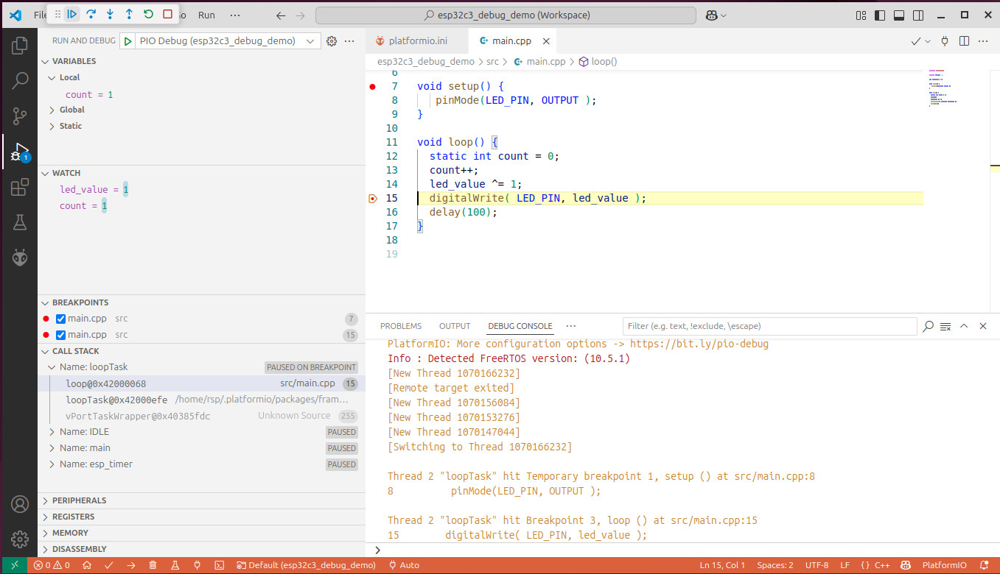
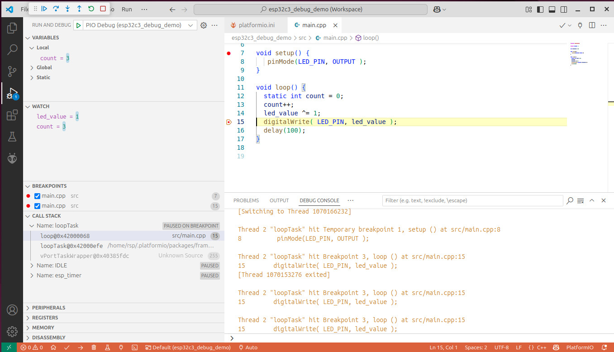
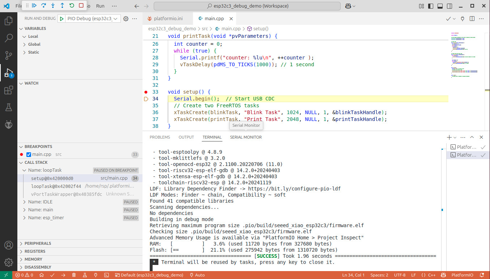
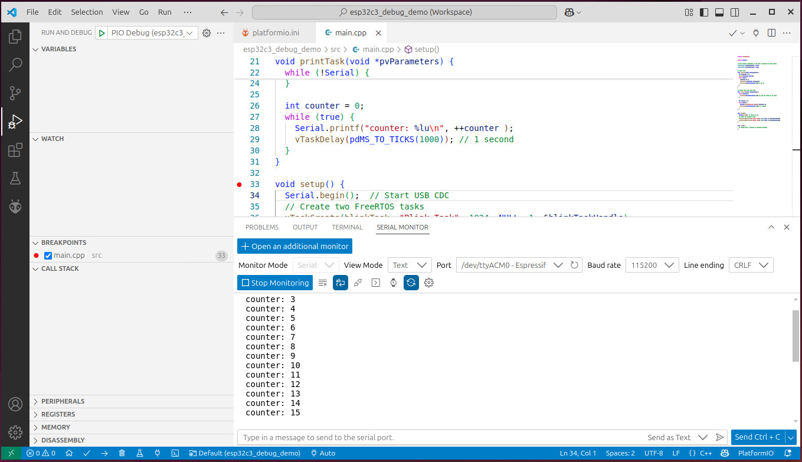

การเขียนโค้ด Arduino และดีบักการทำงานของชิป Espressif ESP32-C3 ด้วย PIO Debug / USB-JTAG#
▷ Espressif ESP32-C3 SoC#
ชิป ESP32-C3 ของบริษัท Espressif เป็นชิปประเภท SoC ที่รองรับการเชื่อมต่อแบบไร้สายทั้ง Wi-Fi และ Bluetooth Low Energy (BLE) ภายในประกอบด้วยซีพียูสถาปัตยกรรม 32-bit RISC-V (RV32IMC ISA)
บอร์ดไมโครคอนโทรลเลอร์ ESP32-C3 มีราคาไม่แพง และสามารถเขียนโค้ดด้วยภาษา C/C++ โดยใช้ตัวเลือกต่อไปนี้ได้
- Arduino IDE + Arduino ESP32 Core
- VS Code IDE + PlatformIO extension
- VS Code IDE + Espressif ESP-IDF extension
ชิปหลายรุ่นของ Espressif เช่น ESP32-C3, ESP32-S2, ESP32-S3 และ ESP32-C6 รองรับการเชื่อมต่อผ่าน USB โดยตรง โดยสามารถสื่อสารข้อมูลในรูปแบบ USB-CDC (Serial) และบางรุ่นยังมีวงจร USB-to-JTAG สำหรับใช้อัปโหลดเฟิร์มแวร์และการดีบักระดับฮาร์ดแวร์ของซีพียูผ่าน JTAG Interface
บทความนี้นำเสนอแนวทางการใช้งานซอฟต์แวร์ VS Code IDE ร่วมกับ PlatformIO extension (ทดลองใช้งานบนระบบปฏิบัติการ Linux) พร้อมตัวอย่างโค้ด Arduino Sketch สำหรับสาธิตการอัปโหลดและดีบักการทำงานของโปรแกรมบนชิป ESP32-C3
แนะนำให้ผู้อ่านได้ติดตั้งโปรแกรม VS Code IDE และ PlatformIO (PIO) ตามลำดับก่อน
▷ ขั้นตอนการพัฒนาโค้ด Arduino Sketch สำหรับ ESP32-C3 ด้วย PlatformIO#
ขั้นตอนการดำเนินการมีดังนี้
- สร้างโปรเจกต์ใหม่: เปิด VS Code แล้วไปที่เมนู “PIO Home” → “New Project” จากนั้นตั้งชื่อโปรเจกต์, เลือกไดเรกทอรีเก็บโปรเจกต์, เลือกบอร์ดที่ใช้ชิป ESP32-C3 และเลือก Arduino เป็น Framework
- ทดลองใช้โค้ดตัวอย่าง Arduino Sketch: เขียนหรือวางโค้ด Arduino ที่ต้องการลงในไฟล์
src/main.cppซึ่งเป็นไฟล์หลักของโปรเจกต์ - แก้ไขไฟล์
platformio.ini: ปรับแต่งคอนฟิก เช่น เพิ่มการตั้งค่าพอร์ต ความเร็วอัปโหลด หรือเปิดการดีบัก ตามตัวอย่างที่ให้ - คอมไพล์โปรเจกต์ (Build): ใช้คำสั่ง “Build” จากเมนูของ PlatformIO เพื่อตรวจสอบว่าโค้ดสามารถคอมไพล์ได้โดยไม่มีข้อผิดพลาด
- เชื่อมต่อบอร์ด ESP32-C3: ต่อบอร์ดเข้ากับคอมพิวเตอร์ผ่านสาย USB
- อัปโหลดเฟิร์มแวร์: ใช้คำสั่ง “Upload” เพื่ออัปโหลดเฟิร์มแวร์ไปยังบอร์ด ESP32-C3 ผ่านพอร์ต USB
- ดีบักโค้ด (PIO Debug): เริ่มขั้นตอนดีบักด้วยคำสั่ง “Start Debugging” สามารถกำหนดตำแหน่ง Breakpoints ในโค้ด แล้วรันโปรแกรมแบบควบคุมการทำงานทีละขั้น

รูป: การสร้างโปรเจกต์ใหม่สำหรับ PIO

รูป: ตัวอย่างโค้ดในไฟล์ src/main.cpp ของโปรเจกต์
ตัวอย่างไฟล์ main.cpp
#include <Arduino.h>
// Define the GPIO pin connected to the LED
#define LED_PIN 8
// Variable to hold the current LED state (0 or 1)
int led_value = 0;
void setup() {
// Set the LED pin as an output
pinMode(LED_PIN, OUTPUT);
}
void loop() {
// Declare a static counter to track the number of loop iterations
static int count = 0;
// Increment the counter on each loop iteration
count++;
// Toggle the LED state using bitwise XOR
led_value ^= 1;
// Set the LED pin to the current state
digitalWrite(LED_PIN, led_value);
// Wait for 100 milliseconds
delay(100);
}
ตัวอย่างการตั้งค่าใช้งานสำหรับไฟล์ platformio.ini
[env:seeed_xiao_esp32c3]
platform = platform-espressif32
framework = arduino
board = seeed_xiao_esp32c3
build_flags =
-D CONFIG_USB_CDC_ENABLED=1
-D ARDUINO_USB_MODE=1
-D ARDUINO_USB_CDC_ON_BOOT=1
monitor_speed = 115200
upload_protocol = esp-builtin
upload_port = /dev/ttyACM0
debug_tool = esp-builtin
build_type = debug
debug_build_flags = -O0 -g -ggdb
debug_init_break = tbreak setup
คำอธิบาย
platform = platform-espressif32ระบุว่าต้องการใช้แพลตฟอร์มสำหรับบอร์ดตระกูล ESP32 ซึ่งจะติดตั้ง Toolchain และไลบรารี ที่จำเป็นโดยอัตโนมัติ (เช่น ดาวน์โหลดและติดตั้งไว้ภายใต้ไดเรกทอรี$HOME/.platformio/packages/สำหรับ Linux)framework = arduinoกำหนดให้เขียนโปรแกรมโดยใช้ Arduino Frameworkboard = seeed_xiao_esp32c3ระบุชื่อบอร์ดตามที่ PlatformIO รองรับ เพื่อใช้คอนฟิกค่าพินและค่าพารามิเตอร์ต่างๆ โดยอัตโนมัติbuild_flagsเป็นการกำหนด Flags สำหรับการคอมไพล์ เช่น การตั้งค่าเพื่อเปิดใช้งาน USB CDC สำหรับ ESP32-C3monitor_speed = 115200ตั้งค่า Baudrate ของ Serial Monitor ให้ตรงกับที่ใช้ในโค้ดupload_protocol = esp-builtinใช้โปรโตคอลอัปโหลดที่มากับชิป ESP32-C3 โดยตรงผ่าน USB ซึ่งรองรับ USB-JTAGupload_port = /dev/ttyACM0ระบุชื่อพอร์ต USB ที่เชื่อมต่อกับ ESP32-C3 ซึ่งอาจเปลี่ยนแปลงไปตามระบบปฏิบัติการ (ตัวอย่างสำหรับ Linux)debug_tool = esp-builtinใช้ USB-JTAG ที่ฝังอยู่ภายใน ESP32-C3 สำหรับการดีบักbuild_type = debugระบุว่าให้สร้างโปรเจกต์ในโหมดสำหรับการดีบัก (แทน Release)debug_build_flags = -O0 -g -ggdbเป็นการกำหนด Flags สำหรับการคอมไพล์เพื่อดีบัก ปิดการ Optimize และเปิดข้อมูลดีบักเต็มรูปแบบ เพื่อให้สามารถดูตัวแปร และทำงานของ Stack ได้ครบถ้วนdebug_init_break = tbreak setupตั้ง Breakpoint ให้หยุดการทำงานที่จุดเริ่มต้นของฟังก์ชันsetup()ซึ่งช่วยให้วิเคราะห์การทำงานเริ่มต้นได้ง่าย
ข้อสังเกต:
- หากต้องการระบุเวอร์ชันของ Platform ESP32 Framework ที่ต้องการ ก็ให้ตั้งค่าสำหรับ
platformโดยระบุ URL ตามตัวอย่างต่อไปนี้
https://github.com/pioarduino/platform-espressif32/releases/download/54.03.20/platform-espressif32.zip
ใน Linux สามารถทำคำสั่งต่อไปนี้ เพื่อตรวจสอบดูว่า มองเห็นอุปกรณ์ ESP32-C3 และพร้อมใช้งานหรือไม่
$ lsusb | grep Espressif
Bus 001 Device 006: ID 303a:1001 Espressif USB JTAG/serial debug unit
จากข้อความตัวอย่างเอาต์พุต จะเห็นว่า มีรายการอุปกรณ์ของ Espressif (VID:PID = 303a:1001)

รูป: ทำขั้นตอน Build เพื่อคอมไพล์โค้ดในโปรเจกต์
เมื่อมีการอัปโหลดโค้ดไปยังบอร์ด ESP32-C3 และเริ่มขึ้นตอนดีบักได้แล้ว ให้สังเกตดูข้อความต่าง ๆ ในหน้าต่าง Debug Console

รูป: เริ่มขั้นตอน PIO Debug และคลิกดู Debug Console

รูป: การหยุดการทำงานของซีพียูชั่วคราวตามตำแหน่งของ BREAKPOINTS ที่ได้กำหนดไว้ในโค้ด

รูป: ดูการเปลี่ยนแปลงและค่าของตัวแปรในโค้ด ซึ่งได้กำหนดไว้ในรายการของ WATCH
หากจะลองเขียนโค้ดโดยใช้ FreeRTOS Tasks ก็มีตัวอย่างโค้ดดังนี้
#include <Arduino.h>
#define LED_PIN 8
// Task handles
TaskHandle_t blinkTaskHandle = NULL;
TaskHandle_t printTaskHandle = NULL;
// Blink Task
void blinkTask(void *pvParameters) {
int led_state = 0;
pinMode(LED_PIN, OUTPUT);
while (true) {
led_state ^= 1;
digitalWrite(LED_PIN, led_state);
vTaskDelay(pdMS_TO_TICKS(100)); // 100 ms
}
}
// Serial Print Task (USB CDC)
void printTask(void *pvParameters) {
while (!Serial) {
vTaskDelay(pdMS_TO_TICKS(100)); // Wait for Serial to be ready
}
int counter = 0;
while (true) {
Serial.printf("counter: %lu\n", ++counter );
vTaskDelay(pdMS_TO_TICKS(1000)); // 1 second
}
}
void setup() {
Serial.begin(); // Start USB CDC
// Create two FreeRTOS tasks
xTaskCreate(blinkTask, "Blink Task", 1024, NULL, 1, &blinkTaskHandle);
xTaskCreate(printTask, "Print Task", 2048, NULL, 1, &printTaskHandle);
}
void loop() {
// Nothing here
}

รูป: ทำขั้นตอนอัปโหลด และเริ่มต้น PIO Debug

รูป: เปิดใช้งาน Serial Monitor เพื่อรับข้อความจาก USB-CDC (Serial) ที่ถูกส่งมาจากบอร์ด
▷ กล่าวสรุป#
บทความนี้ได้นำเสนอ การใช้งานซอฟต์แวร์ VS Code IDE ร่วมกับ PlatformIO extension ในเบื้องต้น แม้ว่าจะได้ทดลองใช้งานกับระบบปฏิบัติการ Linux แต่ก็มีแนวทางเดียวกันสำหรับ Windows 10 & 11 ได้เรียนรู้ขั้นตอนการสาธิตการอัปโหลดและดีบักการทำงานของโปรแกรมบนชิป ESP32-C3 และเขียนโค้ดตัวอย่างในรูปแบบ Arduino Sketch และมีการใช้ FreeRTOS ในเบื้องต้น
แนะนำบทความภาษาไทยที่เกี่ยวข้องให้ศึกษาเพิ่มเติม
- eBook: "ESP32-C3 Wireless Adventure - A Comprehensive Guide to IoT" (Github repo)
- "การใช้งาน VS Code IDE + PlatformIO Extension สำหรับการเขียนโค้ด Arduino"
- "การใช้งาน PlatformIO ร่วมกับ VS Code IDE สำหรับบอร์ด ESP32"
- "การใช้งาน PlatformIO (PIO) Core สำหรับ WSL2 Ubuntu ในเบื้องต้น"
- "การติดตั้งและใช้งาน ESP-IDF สำหรับ WSL / Ubuntu"
- "การใช้งาน VS Code IDE + Espresssif IDF Extension สำหรับ Windows"
- "การใช้งาน ESP-IDF (WSL2 / Ubuntu) สำหรับ ESP32-C6"
This work is licensed under a Creative Commons Attribution-ShareAlike 4.0 International License.
Created: 2025-05-02 | Last Updated: 2025-05-02